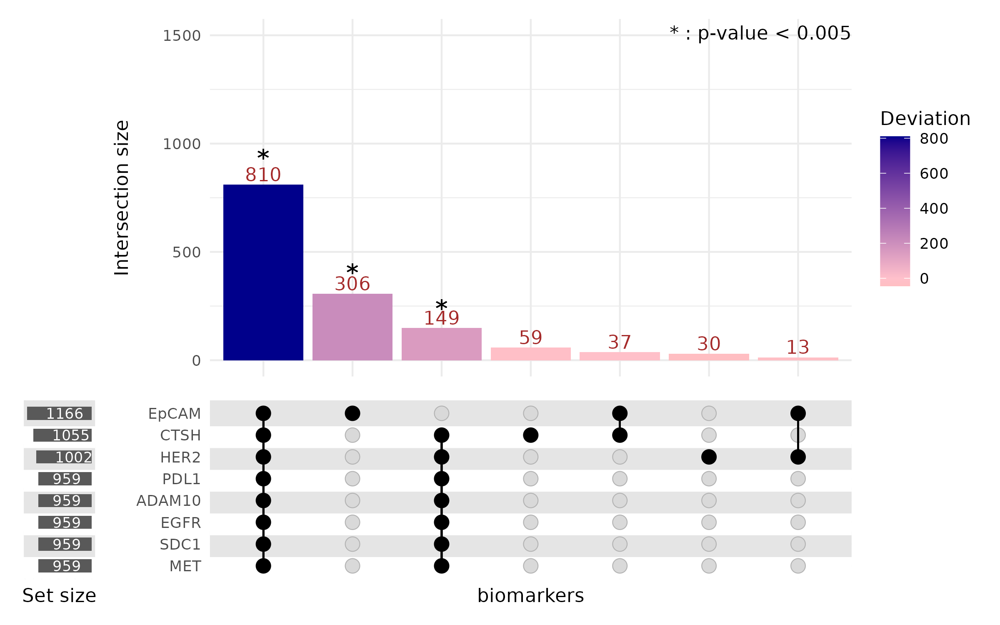

Overview of the conventional UpSet plot
Upset plot is a visualization method designed to analyze and interpret set intersections across multiple categories (Lex, 2014). Unlike traditional Venn diagrams, which are limited to fewer than five sets, UpSet plots are better suited for handling complex datasets with numerous categories. This method provides a clearer and more comprehensive representation of intersecting relationships.
This method has found widespread use in various domains. For example, they are useful in gene set analysis, where researchers examine the overlap between differentially expressed genes under various experimental conditions (Jensen, 2017). UpSet plots are also used in proteomics analysis for comparing protein identifications in different samples (Sagendorf, 2022). Especially in biological contexts, UpSet plots allow exploration of complex intersections, providing a useful tool for analyzing multidimensional data.
At the core of an UpSet plot is a matrix-like structure that visualizes the intersections. The x-axis typically represents different combinations of intersecting sets, while the y-axis displays the size of these intersections (i.e., the cardinalities). Horizontal bars indicate the total size of each individual set. Dot matrices or line connectors are used to indicate which sets contribute to a given intersection. This structured layout allows users to easily discern patterns and relationships that might be obscured in more traditional visualizations.
Generally, Interpreting an UpSet plot involves identifying the most significant intersections, as denoted by the vertical bar plot. The corresponding dot combinations are then examined to understand the groups that share many co-occurring elements. For instance, in a study analyzing movie genres, the largest intersection might involve movies classified exclusively as Drama, while smaller intersections might reveal combinations such as Crime and Thriller (see figure here). These insights help highlight the distribution and overlap between categories. In this example, an appropriate interpretation would be that most movies belong to a single genre, while fewer movies are shared across multiple genres.
One of the key strengths of UpSet plots is their scalability and ability to handle large and complex datasets. They provide a clear and intuitive visualization even when dealing with numerous sets and intersections, which would be difficult or impossible to represent using traditional Venn diagrams. Moreover, they facilitate quick identification of significant intersections, making them ideal for exploratory data analysis.
However, UpSet plots also have limitations. As the number of sets and intersections increases, the plot can become cluttered, making interpretation more challenging. Additionally, generating and customizing UpSet plots often requires specialized software or coding skills, which might pose a barrier for users without technical expertise. Lastly, there is currently no standardized method for integrating statistical analyses to identify significantly enriched or depleted intersections. Addressing these challenges would enhance the utility of UpSet plots for broader applications.
##Adding statistical analysis to UpSet
###Concept of deviation
When the UpSet plot was introduced, the concept of deviation was also discussed @6876017. Deviation describes the difference between the expected and observed cardinality. The expected cardinality is calculated under the assumption that the events in the intersection are independent, by multiplying the proportions of the intersecting sets. A high deviation suggests that the sets in the intersection share more-than-expected co-occurring elements, making it a measure of “surprise.” However, a high deviation may result from random chance or from a meaningful dependence between sets. This necessitates a statistical approach to quantify how likely a deviation value could arise from randomness.
###Methodology for statistical significance
We propose a method to compute and visualize the statistical significance of deviations. The process begins with a matrix where rows indicate individual elements, and columns indicate their set memberships. For example, an element belonging to sets A and B, but not C, would be described as having a value of 1 in columns A and B and 0 in C. For each intersection, we simulate the null distribution of deviations by randomly permuting each column. This destroys any potential dependence or relationship between sets, ensuring the independence assumption is valid when calculating expected cardinalities. By comparing the observed deviation with the simulated null distribution, we calculate the likelihood of obtaining such a deviation by chance. This allows us to compute p-values for each intersection. We then apply a Bonferroni correction to identify statistically significant deviations.
Example analysis and interpretations
For our analysis, we used imaging data from a mouse lungcancer cell lines, A549, H2228, and KP1.9. Each element represents an extracellular vesicle (EV), and set membership is determined by the expression of lung cancer-associated markers (e.g., EpCAM, EGFR, SDC1, MET, ADAM10). The results revealed that some intersections (e.g. ADAM10 and MET) showed high deviations with p-values below the Bonferroni-corrected threshold. This indicates that the co-occurrence of these markers is likely attributable to inherent biological dependence rather than stochastic processes. Such findings highlight potential underlying biology and suggest that these markers may serve as reliable biomarkers for identifying EVs of lung cancer, owing to their consistent and significant co-expression patterns.
By incorporating statistical significance into UpSet plots, we provide a more rigorous and interpretable framework for analyzing set intersections. This method highlights biologically meaningful patterns that might otherwise be obscured.
## [1] "Calculating expected and observed probabilities..."
## [1] "Running simulation to calculate the null distribution of deviations..."